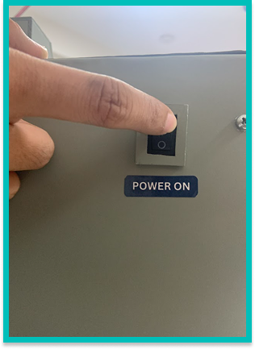
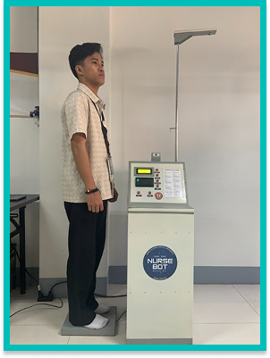
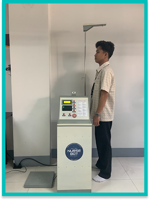
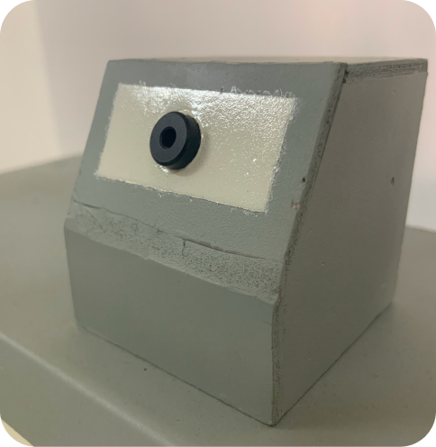
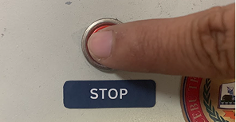

STEP 1:
To activate (ON) the machine, plug in the AC male cable to an electrical outlet or AC power source and switch on the power switch.

STEP 2:
Step on the weighing scale and press the weight button.
STEP 3:
Position yourself at the height measuring system and press the height button. Make sure your head is aligned properly with the height sensor.

STEP 4:
Place your forehead or wrist at the temperature sensor with a one (1) inch gap and then press the temperature button.


STEP 5:
Wait for the process to print the results.

STEP 6:
To reset the system, press the stop button first before pressing the reset button.